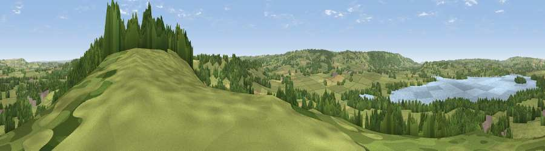

Viewpoint near Bishop Sutton
#19193 in England · top 37% of its area beats it · near Bishop SuttonThe view, rendered

A 360° render of this exact spot computed from the terrain model, tree cover and land cover — summer colours, afternoon light, calibrated against photographs of famous viewpoints. Real trees, hedges and buildings will differ in detail.
The panorama
Grey silhouette: terrain skyline in each direction (720 bearings, Earth curvature and refraction included). Dashed green: skyline with trees (+15 m) and buildings (+8 m) as obstacles. Blue strip: how far the ground is visible on each bearing.
Where the view opens
Wedge length = distance to the farthest visible ground on that bearing (vegetation-aware). Rings at 10, 25 and 50 km.
What fills the view
58% grassland · 23% woodland · 12% water · 5% cropland · 2% built-up
Angular shares of the visible panorama (visual magnitude), not map area. Landscape diversity 0.50 (0–1 Shannon).
Key numbers
More beautiful places nearby
The staircase of upgrades: each row has a higher view potential than everything closer. Driving times are estimates from straight-line distance, calibrated against real road routing — check an actual route before setting out.
| Place | Direction | Drive | Score |
|---|---|---|---|
| Viewpoint near Bishop Sutton | ENE · 1 km | ~3 min | 58.7 |
| Viewpoint near Clutton | ENE · 3 km | ~8 min | 61.6 |
| Viewpoint near Ubley | WSW · 5 km | ~12 min | 71.3 |
| Viewpoint near Ubley | W · 6 km | ~13 min | 72.2 |
| Viewpoint near Norton Malreward | N · 8 km | ~16 min | 72.9 |
| Viewpoint near Charterhouse | WSW · 8 km | ~17 min | 74.0 |
| Beacon Batch | W · 10 km | ~19 min | 79.4 |
| Bleadon Hill [Loxton Hill] | W · 22 km | ~36 min | 79.6 |
51.32428, -2.60234 · source: screening · position refined by local search. Computed location — check access rights before visiting.